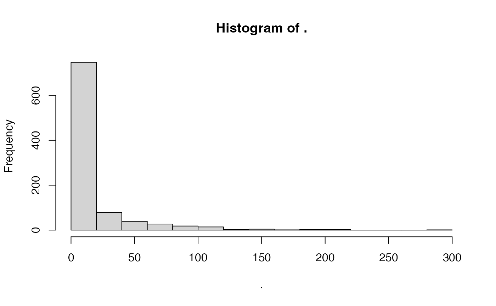

Fit and validate Generalized Additive Models
Usage
fit_abund_gam(
data,
response,
predictors,
predictors_f = NULL,
fit_formula = NULL,
sigma_formula = ~1,
nu_formula = ~1,
tau_formula = ~1,
partition = NULL,
hold_out_set = NULL,
predict_part = FALSE,
distribution = NULL,
inter = "automatic",
verbose = TRUE,
control_gamlss = gamlss::gamlss.control(trace = FALSE)
)Arguments
- data
tibble or data.frame. Database with response, predictors, and partition values
- response
character. Column name with species abundance.
- predictors
character. Vector with the column names of quantitative predictor variables (i.e. continuous variables). Usage predictors = c("temp", "precipt", "sand")
- predictors_f
character. Vector with the column names of qualitative predictor variables (i.e. ordinal or nominal variables type). Usage predictors_f = c("landform")
- fit_formula
formula. A formula object with response and predictor variables (e.g. formula(abund ~ temp + precipt + sand + landform)). Note that the variables used here must be consistent with those used in response, predictors, and predictors_f arguments. Default NULL
- sigma_formula
formula. formula for fitting a model to the nu parameter. Usage sigma_formula = ~ precipt + temp
- nu_formula
formula. formula for fitting a model to the nu parameter. Usage nu_formula = ~ precipt + temp
- tau_formula
formula. formula for fitting a model to the tau parameter. Usage tau_formula = ~ precipt + temp
- partition
character. Column name with training and validation partition groups.
- hold_out_set
tibble or data.frame. Optional hold-out dataset, never used during training, with the response and predictor columns. If provided, performance metrics are also calculated on it. Default NULL
- predict_part
logical. Save predicted abundance for testing data. Default = FALSE
- distribution
character. A string specifying the distribution to be used. See gamlss.family documentation for details. Use distribution = gamlss.dist::NO(). Default NULL
- inter
integer. Number of knots in x-axis. Default "automatic"
- verbose
logical. If FALSE, disables all console messages. Default TRUE
- control_gamlss
function. control parameters of the outer iterations algorithm in gamlss See gamlss.control documentation for details. Default gamlss.control()
Value
A list object with:
model: A "gamlss" class object from gamlss package. This object can be used for predicting.
predictors: A tibble with quantitative (c column names) and qualitative (f column names) variables use for modeling.
performance: Averaged performance metrics (see
adm_eval).performance_part: Performance metrics for each replica and partition.
predicted_part: Observed and predicted abundance for each test partition.
Examples
# \donttest{
require(terra)
require(dplyr)
require(gamlss)
#> Loading required package: gamlss
#> Loading required package: splines
#> Loading required package: gamlss.data
#>
#> Attaching package: ‘gamlss.data’
#> The following object is masked from ‘package:datasets’:
#>
#> sleep
#> Loading required package: gamlss.dist
#> Loading required package: nlme
#>
#> Attaching package: ‘nlme’
#> The following object is masked from ‘package:dplyr’:
#>
#> collapse
#> Loading required package: parallel
#> ********** GAMLSS Version 5.5-0 **********
#> For more on GAMLSS look at https://www.gamlss.com/
#> Type gamlssNews() to see new features/changes/bug fixes.
# Database with species abundance and x and y coordinates
data("sppabund")
# Extract data for a single species
some_sp <- sppabund %>%
dplyr::filter(species == "Species one") %>%
dplyr::select(-.part2, -.part3)
# Explore reponse variables
some_sp$ind_ha %>% range()
#> [1] 0.0000 285.2941
some_sp$ind_ha %>% hist()

# Here we balance number of absences
some_sp <-
balance_dataset(some_sp, response = "ind_ha", absence_ratio = 0.2)
# Explore different family distributions
family_selector(data = some_sp, response = "ind_ha") %>% tail()
#> Response variable is continuous and need to be transformed to integer in order to test for discrete families.
#> Selected 29 suitable families for the data.
#> # A tibble: 6 × 4
#> family_name family_call range discrete
#> <chr> <chr> <chr> <int>
#> 1 Skew t type 3 ST3 (-∞, ∞) 0
#> 2 Skew t type 4 ST4 (-∞, ∞) 0
#> 3 Skew t type 5 ST5 (-∞, ∞) 0
#> 4 Zero Adjusted Gamma ZAGA [0,∞) 0
#> 5 Zero adjusted IG ZAIG [0,∞) 0
#> 6 t-distribution TF (-∞, ∞) 0
# Fit a GAM model
mgam <- fit_abund_gam(
data = some_sp,
response = "ind_ha",
predictors = c("elevation", "sand", "bio3", "bio12"),
sigma_formula = ~ elevation + bio3 + bio12,
predictors_f = NULL,
partition = ".part1",
distribution = gamlss.dist::ZAGA()
)
#> Formula used for model fitting:
#> ind_ha ~ pb(elevation) + pb(sand) + pb(bio3) + pb(bio12)
#> Replica number: 1/1
#> -- Partition number 1/3
#> -- Partition number 2/3
#> -- Partition number 3/3
mgam
#> $model
#>
#> Family: c("ZAGA", "Zero Adjusted GA")
#> Fitting method: RS()
#>
#> Call: gamlss::gamlss(formula = formula1, sigma.formula = sigma_formula,
#> nu.formula = nu_formula, tau.formula = tau_formula,
#> family = family, data = data, control = control_gamlss, trace = FALSE)
#>
#>
#> Mu Coefficients:
#> (Intercept) pb(elevation) pb(sand) pb(bio3) pb(bio12)
#> 8.4916013 -0.0000553 0.0000874 -8.5344436 -0.0006680
#> Sigma Coefficients:
#> (Intercept) elevation bio3 bio12
#> -0.5688448 -0.0001438 1.5439011 -0.0002137
#> Nu Coefficients:
#> (Intercept)
#> -1.605
#>
#> Degrees of Freedom for the fit: 13.13 Residual Deg. of Freedom 548.9
#> Global Deviance: 4597.25
#> AIC: 4623.5
#> SBC: 4680.37
#>
#> $predictors
#> # A tibble: 1 × 6
#> model response c1 c2 c3 c4
#> <chr> <chr> <chr> <chr> <chr> <chr>
#> 1 gam ind_ha elevation sand bio3 bio12
#>
#> $performance
#> # A tibble: 1 × 13
#> model mae_mean mae_sd corr_spear_mean corr_spear_sd corr_pear_mean
#> <chr> <dbl> <dbl> <dbl> <dbl> <dbl>
#> 1 gam 26.6 1.30 0.252 0.0311 0.239
#> # ℹ 7 more variables: corr_pear_sd <dbl>, inter_mean <dbl>, inter_sd <dbl>,
#> # slope_mean <dbl>, slope_sd <dbl>, pdisp_mean <dbl>, pdisp_sd <dbl>
#>
#> $performance_part
#> # A tibble: 3 × 9
#> replica partition model mae corr_spear corr_pear inter slope pdisp
#> <chr> <chr> <chr> <dbl> <dbl> <dbl> <dbl> <dbl> <dbl>
#> 1 1 1 gam 26.9 0.268 0.256 6.78 0.553 0.463
#> 2 1 2 gam 25.2 0.271 0.194 10.6 0.441 0.441
#> 3 1 3 gam 27.8 0.216 0.267 3.71 0.875 0.305
#>
#> $metadata
#> $metadata$plataform
#> [1] "aarch64-apple-darwin23"
#>
#> $metadata$R_version
#> [1] "R version 4.6.1 (2026-06-24)"
#>
#> $metadata$run_date
#> [1] "2026-10-21 13:39:13 PDT"
#>
#> $metadata$formula
#> ind_ha ~ pb(elevation) + pb(sand) + pb(bio3) + pb(bio12)
#> <environment: 0x6dfdd4f20>
#>
#> $metadata$sigma.formula
#> ~elevation + bio3 + bio12
#> <environment: 0x6d23d2468>
#>
#> $metadata$nu.formula
#> ~1
#> <environment: 0x6dfdd4f20>
#>
#> $metadata$tau.formula
#> ~1
#> <environment: 0x6dfdd4f20>
#>
#> $metadata$hyperparameters
#> $metadata$hyperparameters$distribution
#>
#> GAMLSS Family: ZAGA Zero Adjusted GA
#> Link function for mu : log
#> Link function for sigma: log
#> Link function for nu : logit
#>
#> $metadata$hyperparameters$inter
#> [1] "automatic"
#>
#>
#> $metadata$source_function
#> [1] "fit_abund_gam"
#>
#>
# }